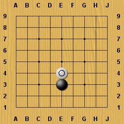
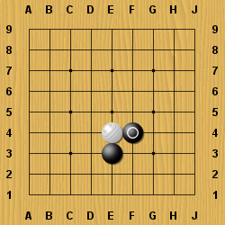
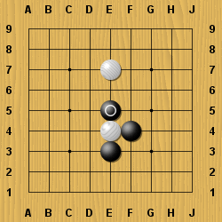
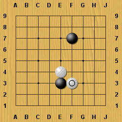

Home
Home
Сега ще научим някой практически техники, от които ще имате нужда когато започнете истинска игра.
Вие сте с черните, както обикновено.
Белия слага камък много близо до ваш - този ход се нарича - "докосване".
Как ще отговорите на докосването?

В този случай, хода на черният показан по долу е добър.
Този ход намалява свободите на белият камък от 3 на 2.
Не ви ли прилича на плесница по бузата?
Атакувай атакуващият!

Продължавайки, ако белия играе някъде другаде, примерво E7, черният може да продължи да атакува белият камък. Сега E4 камакът е в атари - с още един ход може да го вземете.

Ако черният не отговори на докосването на белият и играе другаде, примерно F7, как ще играе белият?
Тогава белият ще продължи да атакува по същият начин.
Виждате ли, черният E3 камък е в беда?

И накрая, малко практика.
Белият току що е докоснал ваш камък.
Има два верни отговора. Намерете ги!
Много е лесно, нали?
 Next
Next
 Съдържание
Съдържание